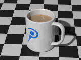
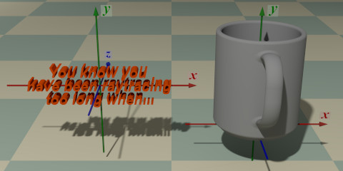
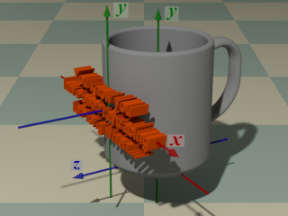
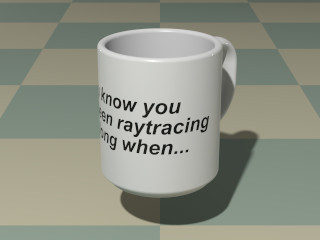

{kind=link}

A library module from the Persistence of Vision Ray Tracer (POV-Ray) Object Collection.
 Some objects, though not used directly in office work, are nevertheless indispensable for the efficient functioning of the office.
| Key Files | |
|---|---|
| File | Description |
coffeemug.html |
The user manual (this document) |
coffeemug.inc |
The CoffeeMug software |
coffeemug.jpg |
Sample output |
coffeemug.pov |
An example scene file |
READMEnnnnnn.html
(where nnnnnn is a 6-digit number)
|
Important information about using the Object Collection |
| Other Files | |
| File | Description |
coffeemug.css |
A support file for the user manual |
coffeemug_fig1.jpg |
Illustrations for the user manual |
coffeemug_fig4.jpg |
|
coffeemug_fig5.jpg |
|
coffeemug_thumbnail.jpg |
|
coffeemug_description.txt |
A brief description of CoffeeMug |
coffeemug_keywords.txt |
A list of keywords |
coffeemug_prereqs.txt |
Prerequisites (empty file) |
cc-LGPL-a.png |
Administrative support files |
Versionnnnnnn.js
(where nnnnnn is a 6-digit number)
|
|
The file coffeemug.inc defines macros that create a coffee
mug and a beverage to fill it. Include this file once prior to using the macros:
#include "coffeemug.inc"
Including the file more than once is harmless, though unnecessary.
Requires POV-Ray version 3.5 or later.
All file names in this module and all global and local identifiers defined in coffeemug.inc comply fully with the Object Collection naming standards, as revised August 2008 and proposed August 2012. The prefix for this module is “coffeemug,” including any uppercase and lowercase variations; to avoid conflicts, do not declare identifiers that start with this prefix plus an underscore.
The following parameters are used by the macro CoffeeMug_Beverage(). They may be changed at any time by the user.
| Parameter | Type | Description | Default |
|---|---|---|---|
CoffeeMug_ConAngle |
float | The contact angle of the meniscus, in degrees. Valid values are 0 (concave, completely wet) to 180 (convex, completely phobic). | 8 |
CoffeeMug_rMeniscus |
float | The radius of the meniscus curve, in millimeters. | 2 |
An untextured coffee mug, with the handle pointing in the negative z direction.
Radius: Capacity:
Units argument.
Units:
Use_merge:
yes if the mug is to be transparent, no otherwise.
Note: CoffeeMug_Mug() calls macro CoffeeMug_Detail(), supplying its own automatically calculated arguments. If the mug is very short, the calculated handle dimensions will trigger a warning from CoffeeMug_Detail().
An untextured coffee mug with more user control over the dimensions. The handle points in the negative z direction.
Radius: Wall: Capacity:
Units argument.
Units:
v_Handle: Handle_space:
Use_merge:
yes if the mug is to be transparent, no otherwise.
A beverage pre-sculpted to fit the coffee mug. The object is untextured, allowing the user the choice of coffee black, café au lait, cocoa, tea, apple cider, Dasani®, rum and Coke®, or any of a number of other quaffs. The object will not contour to the rim of the mug. Carbonation for the rum and Coke is available separately from the Object Collection’s bubble module.
Radius: Wall:
0.0 if the mug is created with CoffeeMug_Mug().
Capacity:
Units argument.
Note: The meniscus and the curvature of the floor of the mug are not considered in the volume-to-height calculation.
Units:
Note: If set to COFFEEMUG_HEIGHT, the meniscus will not be modeled.
Epsilon:
Computes the height of a cylinder, given its capacity and radius.
Radius: Capacity:
Units argument.
Units:
Returns a cylindrically-mapped block pigment from a user-supplied object. A slice is taken at the x-y plane, transformed to the middle-front of the mug, and wrapped around the mug. The object should be centered on the origin.
These illustrations show how an object is mapped to the mug.
  
Radius: Wall:
0.0 if the mug is created with CoffeeMug_Mug().
Capacity:
Units argument.
Units:
o_Print: p_Background: p_Foreground: Returns a cylindrically-mapped block texture from a user-supplied object. A slice is taken at the x-y plane, transformed to the middle-front of the mug, and wrapped around the mug, as shown in these illustrations. The object should be centered on the origin.
Radius: Wall:
0.0 if the mug is created with CoffeeMug_Mug().
Capacity:
Units argument.
Units:
o_Print: t_Background: t_Foreground: | Code | Linear POV-Unit | Liquid Measure (Volume) |
|---|---|---|
COFFEEMUG_INCH |
Inches | Fluid ounces |
COFFEEMUG_CM |
Centimeters | Milliliters |
COFFEEMUG_MM |
Millimeters | Milliliters |
COFFEEMUG_HEIGHT |
Arbitrary | The capacity argument determines the height instead of the volume |
Any identifiers in coffeemug.inc that are not documented in this manual are considered “private” or “protected,” and are subject to change or elimination in a future update.
| Version | Date | Notes |
|---|---|---|
| 1.0 | August 7, 2008 | Software is created. |
| 1.1 | August 8, 2008 | Texture options are added. |
| 1.2 | August 31, 2008 | Complies with the August 2008 revision to the naming standards. |
| 1.3 | May 20, 2013 | Options for controlling the meniscus are added. |
| 1.3a | May 21, 2013 | Same as version 1.3, but with sample output corrected. |
Coke® and Dasani® are registered trademarks of the Coca-Cola Company. No endorsement is implied.